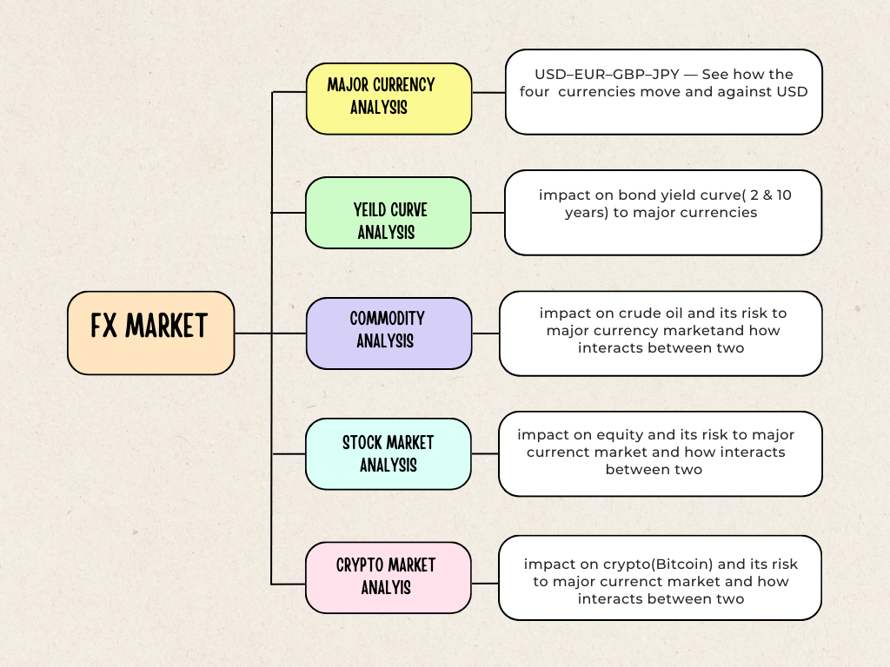

Introduction
Time series analyis on FX market and multi-asset portfolio

We bump into exchange rates more often than we realize—when we travel, shop online from overseas retailers, or invest in foreign stocks and funds. An exchange rate is simply the price of one currency in terms of another, but that price ripples through everyday budgets and corporate balance sheets alike. In other words, FX sits at the seam between micro decisions (what a family pays for imports) and macro outcomes (inflation, trade balances, and monetary policy).
The foreign-exchange (FX) market is where those prices are set. It is a cornerstone of global finance not only because of its scale, but because it compresses a huge amount of information about growth prospects, interest-rate paths, and cross-border trade into a single number that moves every second. FX is also policy-relevant: shifts in exchange rates can tighten or loosen financial conditions, influence exporters’ competitiveness, and feed directly into inflation.
Big picture
This project focuses on four widely used and highly influential currencies—the US dollar (USD), euro (EUR), British pound (GBP), and Japanese yen (JPY). These are not just FX workhorses; they also anchor activity in other markets like equities, bonds, commodities, and ETFs. When they move, portfolio returns, hedging costs, and corporate earnings move with them.
Goal of this project is to study how these four exchange rates evolve over time and how they interact with the broader investment universe. Using a data-science approach—cleaning and aligning public time-series data, modeling seasonality and volatility, testing structural breaks—we will examine (i) how interest-rate differentials and yield-curve shifts map into FX returns, (ii) how trade and current-account dynamics shape medium-term trends, (iii) how equity stress, credit spreads, and oil shocks(gold) spill over into currencies, (iv) what investors gain or lose by hedging foreign-equity exposure, (v) who “leads” whom within the USD–EUR–GBP–JPY complex.
By the end, we aim to translate these signals into clear, practical guidance: when hedging tends to help, which risk states matter most, and how FX connects the dots between the real economy and financial markets.

Analytical Angels
major currency in FX market : USD–EUR–GBP–JPY — See how the four big currencies move together, who leads, and when that changes.
Rates & Curves → Currency Moves — Test whether interest-rate gaps and bond-curve shape help - predict near-term currency moves.
Trade & External Balances → FX — Remove regular seasonal patterns in trade data and check if changes line up with currency trends.
Cross-Asset Risk & Shock Transmission — Measure how stock sell-offs, credit stress, and oil swings spill over into currencies.
Equity Exposure & Currency Hedging — Turn the insights into a simple rule for when hedging foreign stocks helps.
Guiding Questions
Rates → FX: When do interest-rate differentials and yield-curve slopes (2y–10y) predict 1–3 month FX returns, and did those links change after 2020?
Trade seasonality: Do seasonally adjusted moves in trade balances/current accounts lead medium-horizon FX trends, and are effects stronger around quarter-end?
Risk-off behavior: In equity sell-offs and credit stress (VIX/MOVE up), which currency (USD/EUR/GBP/JPY) tends to appreciate most, and how long do those moves persist?
Oil shocks: Are FX responses to oil price spikes vs. drops asymmetric, and did the 2022 energy shock permanently alter EUR/GBP/JPY sensitivities?
Hedging payoff: Under what carry–volatility states do currency-hedged equity ETFs (e.g., HEZU, DXJ) outperform unhedged peers (EZU, EWJ), net of costs?
Hedge rule efficacy: Can a simple rule (e.g., hedge when carry is low and volatility is high) beat always-hedged or always-unhedged strategies out-of-sample?
Four-currency leadership: In a USD–EUR–GBP–JPY system, who leads during regime shifts, and do cross-rates (EUR/GBP, EUR/JPY, GBP/JPY) add predictive information?
Event impacts: Around FOMC/ECB/BoE/BoJ meetings and major data (CPI/NFP/GDP), are abnormal FX returns statistically significant, and state-dependent (risk-on vs risk-off)?
Break alignment: Are breakpoints in FX–rates, FX–trade, and FX–risk linkages synchronized around 2020–2022, or are they asset-specific?
Model value-add: Do regime-aware models (TVP, Markov-switching) deliver meaningful forecast gains over a random-walk at 1–3 month horizons across all three pairs?
Literature reviews
Research on currencies consistently finds they are hard to forecast in a stable, always-works way. Broad surveys show that many models do no better than a simple “no-change” guess and that any apparent pattern tends to come and go, depending on the period and the market backdrop2. For a practical time-series study of USD, EUR, GBP, and JPY, this means beginning with a clear picture of how these four move together over time, testing whether relationships are stable or shifting, and comparing every result to that simple benchmark so we don’t over-interpret noise.
When we add economic context, studies show that interest rates do help, but their effect on exchange rates depends on market conditions. Rate gaps and the shape of bond yields matter because investors demand a changing “risk premium,” so the same rate difference can have different effects in calm vs. stressful periods3. On the real-economy side, newer work after 2020 highlights a financial channel: a stronger U.S. dollar can tighten global financing and slow non-U.S. trade, beyond textbook price effects. That suggests using monthly trade figures that are cleaned for seasonal patterns and also keeping an eye on indicators of financial tightness when relating trade to currency moves4.
Currencies also move with the wider market. Evidence since 2020 shows that oil-price uncertainty can ripple through stocks, bonds, and exchange rates, which encourages tracking how those connections strengthen or weaken over time and checking how currencies react after shocks such as an oil spike or an equity sell-off5. Finally, when turning findings into portfolio actions, research supports dynamic currency hedging—adjusting the hedge as conditions change—rather than a single, fixed rule, provided we keep trading costs and turnover in check; this approach is straightforward to test using widely available, investable funds6.